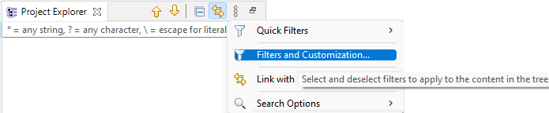

Note: The viewpoint is mainly dedicated to manage allocations of model elements to requirements imported from a ReqIF file. In this main use case, requirements are edited/baselined by an external tool and iteratively imported into Capella to manage allocation of model elements.
It is possible to create and edit requirements though but be aware that there is no export from Capella to ReqIF.
Requirements, Folder, Modules are associated to a Type, defining which attributes apply to them.
By default, types are hidden in the Project Explorer.
Disable the corresponding filter:
In Capella Project Explorer menu choose "Customize View...".

Search the filter "Requirement VP Types" and unmatch it.
If you have already done a import from a ReqIF file, Capella Types Folders must now be visible under an Architecture Block.
Otherwise, you can create your own types folder (right-click on Architecture Block, "Add Capella Element > Capella Types Folder").
Under the Type Folders, create some types as below.

Some predefined types are managed by the tool. Those are automatically created while ReqIF import, but if missing we advise you to create them in the Types Folder and reference them in your types:
| Predefined Type | Boolean | String | Text | Integer | Real | Date |
|---|
In the architecture, create a new Module, and in it, a new Requirement.

Click on the Requirement and associate it, through the Property View, to the newly created type (or an existing one)

As new requirement has to be associated to a Type before editing custom attributes, we advise you to create one 'empty' requirement associated to your type and do copy/paste of it when you want to create a new Requirement. That way, it will be directly associated to the expected Requirement Type.
Now you can edit attributes of your requirements by sending them into the Mass Editing View.

A mass editing table opens and you can edit attributes of your requirements.

Please have a look to the Capella Guide > User Manual > User Interface > Mass Editing and Visualization section to see how these tables work and how to customize them.
To create a new relation type, right-click on a Capella Types Folder : "Add Capella Element > Relation Type".
Do not forget to set its name.
The new relation type is now available for requirements allocation.